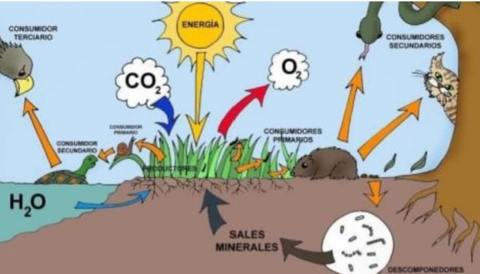

En biología, un ecosistema es un sistema que está formado por un conjunto de organismos, el medio ambiente físico en el que viven (hábitat) y las relaciones tanto bióticas como abióticas que se establecen entre ellos. Las especies de seres vivos que habitan un determinado ecosistema interactúan entre sí y con el medio, determinando el flujo de energía y de materia que ocurre en ese ambiente.
Un ejemplo de las relaciones que tienen lugar entre los seres vivos de un ecosistema son las relaciones alimentarias. Las cadenas tróficas o alimenticias son representaciones sencillas de las relaciones alimentarias que existen entre las especies que forman parte de un ecosistema determinado. Por lo general, en los ecosistemas las cadenas tróficas se interrelacionan formando redes tróficas.
Están formados por factores bióticos y abióticos que se interrelacionan de forma dinámica a través de las cadenas tróficas, es decir, el flujo de materia y energía.
Varían en tamaño y estructura según su tipo.
Pueden ser naturales o artificiales (creados y/o intervenidos por el ser humano)/font>
Son ambientes dinámicos y variables que experimentan cambios naturales o artificiales y un constante flujo de energía y nutrientes entre los factores (tanto bióticos como abióticos) que los constituyen. Se denomina “ecotono” a la zona de transición entre un ecosistema y otro.
La fuente principal de energía en los ecosistemas es la que proviene de la radiación solar. Esta energía es aprovechada por los productores (que son el primer nivel trófico de las cadenas alimentarias) para fijar la materia inorgánica en orgánica.
Son sistemas complejos debido a las interacciones entre sus miembros. A mayor biodiversidad, mayor complejidad del ecosistema.
Pueden ser alterados de manera natural (como las catástrofes naturales) o por la acción del hombre (como la deforestación, la contaminación y la pesca indiscriminada). Las alteraciones por acción del hombre pueden causar daños irreversibles en los ecosistemas, ya que muchas veces las especies que allí habitan no pueden adaptarse a los cambios producidos en el medio.
Son estudiados por la ecología, rama de la biología que estudia a los seres vivos y su relación con el medio que habitan.
Dentro de las cadenas alimentarias existen distintos niveles tróficos, que se basan en la posición que ocupa un organismo en el flujo de materia y energía. Dicho de otra forma, el nivel trófico agrupa a todas las especies que comparten el origen de su alimento dentro del ecosistema. Existen tres niveles tróficos:
PRODUCTORES. Son organismos autótrofos, es decir, que son capaces de producir materia orgánica (su propio alimento) a partir de materia inorgánica, por medio de la fotosíntesis o quimiosíntesis. Los productores son el primer nivel trófico, es decir, que constituyen el primer eslabón de las cadenas alimentarias. Este grupo está representado por las plantas, las algas y fitoplancton y algunas bacterias.
CONSUMIDORES. Son organismos heterótrofos, es decir, se alimentan de otros seres vivos para obtener la materia y energía que necesitan. A su vez, los consumidores se clasifican en distintos grupos, según el organismo que constituye su alimento. Los consumidores primarios son los organismos herbívoros, o sea, aquellos que se alimentan de productores. Los consumidores secundarios, por su parte, son carnívoros y se alimentan de consumidores primarios. También existen consumidores terciarios y cuaternarios, que se alimentan de consumidores secundarios y terciarios respectivamente.
DESCOMPONEDORES. Son organismos que se alimentan de materia orgánica en descomposición, es decir, obtienen la materia y energía que necesitan a partir de restos de otros seres vivos. Si bien no se los suele representar en las cadenas tróficas, son fundamentales en la naturaleza ya que permiten el reciclaje de nutrientes. Entre los organismos descomponedores se encuentran los hongos, las lombrices y algunas bacterias que reciclan la materia orgánica.
El concepto de ecosistema no debe ser confundido con el de bioma. Un bioma es un área o región geográfica del planeta Tierra que se caracteriza por su clima, topografía y biodiversidad. A diferencia de los ecosistemas, los biomas se consideran unidades geográficas homogéneas. Un mismo bioma puede contener diversos ecosistemas.

ELEMENTOS BIÓTICOS. Son aquellos elementos de un ecosistema que poseen vida, es decir, todos los seres vivos que lo habitan Por ejemplo: la flora y la fauna.
ELEMENTOS ABIÓTICOS. Son aquellos factores sin vida que forman parte de un ecosistema. Por ejemplo: condiciones climáticas, relieve, variación del pH, presencia de luz solar.
ACUÁTICOS. Se caracterizan por la presencia de agua como componente principal y son el tipo de ecosistema más abundante: constituyen casi el 75 % de todos los ecosistemas conocidos. En este grupo se incluyen los ecosistemas de los océanos y los de las aguas continentales dulces o saladas, como ríos, lagos y lagunas.
TERRESTRES.Tienen lugar sobre la corteza terrestre y fuera del agua en diversos tipos de relieve: montañas, planicies, valles, desiertos. Existen entre ellos diferencias importantes de temperatura, concentración de oxígeno y clima, por lo que la biodiversidad de estos ecosistemas es grande y variada. Algunos ejemplos de este tipo de ecosistemas son los bosques, los matorrales, la estepa y los desiertos.

MIXTOS. Son ecosistemas que se ubican en zonas de “intersección” de distintos tipos de terrenos, por ejemplo, en los que se combinan el medio acuático y el terrestre. Los ecosistemas mixtos también llamados híbridos, comparten características tanto de ecosistemas terrestres como de los acuáticos, y se los considera zonas de transición entre ambos tipos de ecosistemas mencionados. Los seres vivos que habitan en este tipo de ecosistemas (como los anfibios) pasan la mayor parte del tiempo en uno de los dos ecosistemas pero requieren del otro para reposar, alimentarse o procrear. Algunos ejemplos de este tipo de ecosistemas son los manglares, los esteros y las costas.
MICROBIANOS. Son ecosistemas formados por organismos microscópicos que habitan en prácticamente todos los ambientes, tanto acuáticos como terrestres, e incluso dentro de organismos mayores, como es el caso de la flora microbiana intestinal.
ARTIFICIALES. Son aquellos ecosistemas creados y/o intervenidos por el ser humano, por lo cual también se los conoce como ecosistemas antrópicos. Algunos ejemplos de estos ecosistemas, que son cada vez más comunes en nuestro planeta, son los ecosistemas urbanos, los embalses y los ecosistemas agrícolas.
¿Qué es un ecosistema y sus tipos?
| Ecosistema |
Grandes desiertos cálidos |
Selvas tropicales húmedas |
La sabana |
Bosques fríos o de coníferas |
| Características |
Contienen ecosistemas complejos y mucho más vastos de lo que se cree, caracterizados por vegetación adaptada a la sequía y a las violentas temperaturas (calor de día y frío de noche), así como una fauna de reptiles, aves, insectos y mamíferos pequeños que sobreviven mediante sistemas de madrigueras. |
Son gigantescos reservorios de vida tanto vegetal como animal, organizados en cadenas tróficas de muchísima variedad. Sus ágiles depredadores felinos o serpientes constrictoras, por ejemplo, se ve superada por la oferta de mamíferos, anfibios, aves, roedores e insectos. Su frondosa y también abundante vegetación aprovecha los suelos fértiles y húmedos por la lluvia constante, así como la materia orgánica en descomposición que cubre los suelos (ramas, hojas, frutos, animales muertos, etc.) |
Son las grandes planicies africanas, en las que la sequía estacionaria permite sólo vida vegetal de poca altura, pero grandes mamíferos rumiantes (antílopes, búfalos, etc.), depredados por felinos y caninos de buen tamaño (leones, hienas, etc.) |
En estos bosques de clima frío y húmedo la abundancia de vida vegetal permite la proliferación de cadenas tróficas adaptadas a la vida terrestre o a las altas copas de los árboles, que pueden superar los 10m. La fauna se caracteriza por mamíferos de grueso pelaje (osos, lobos, armiños), insectos, roedores y aves. |
| Imágenes |
 |
 |
|
|